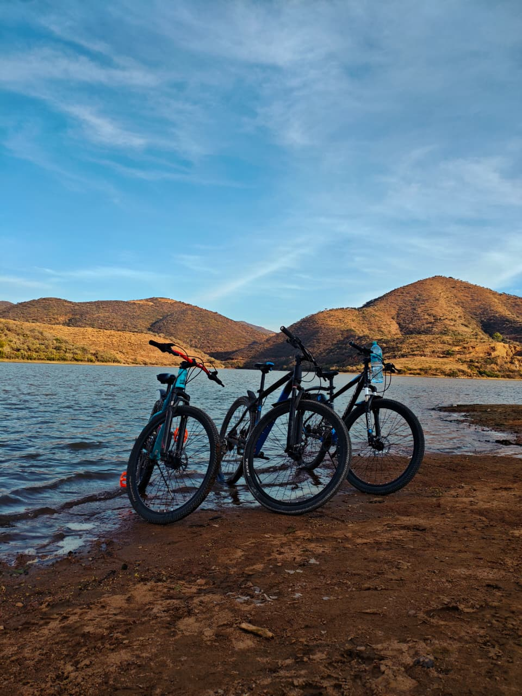
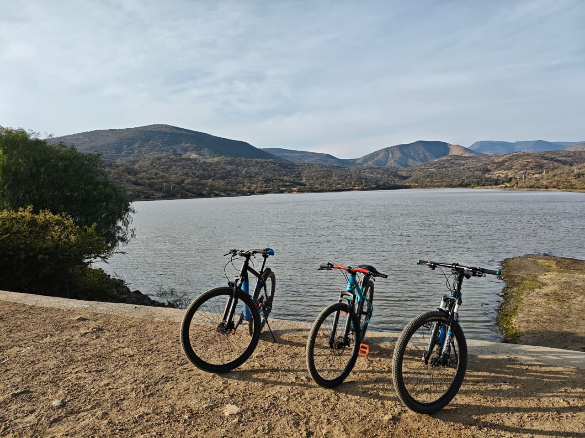

Mi ruta favorita en bici
Este es uno de mis hobbies favoritos el ciclismo. Me gusta salir en bicicleta porque es una forma de hacer ejercicio, conocer nuevos lugares y me hace sentirme libre.
Una de las rutas que he realizado fue hacia Presa Duarte junto a mis tres primos. Fue una rodada que disfruté mucho por el paisaje y por la experiencia de recorrer una distancia diferente ya que nunca me habia animado a salir a este tipo de lugares. Desde ese dia me gusto mas este deporte.


¿Por qué me gusta el ciclismo?
- Me permite hacer ejercicio.
- Disfruto conocer nuevos lugares.
- Me ayuda a despejarme.
- Me gusta mejorar mis recorridos.
- Quisiera lograr ser un ciclista profesional.
Ruta hacia Presa Duarte
Ver ruta en Google Maps
Información de la rodada
| Destino | Presa Duarte |
|---|---|
| Tiempo | 3 horas y media aproximadamente |
| Distancia | 40 kilómetros |
| Tipo de ruta | Recreativa |